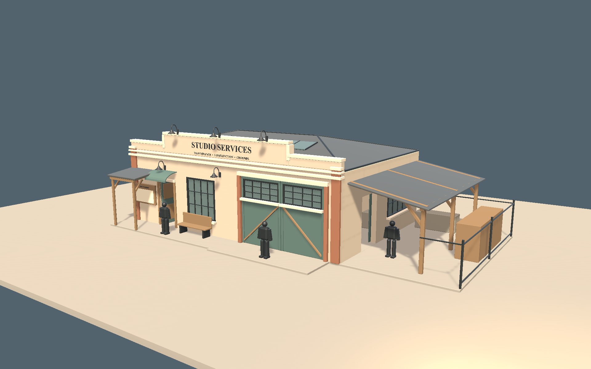
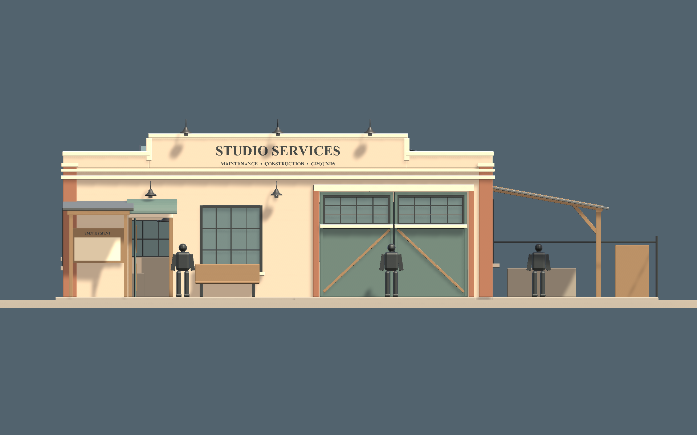
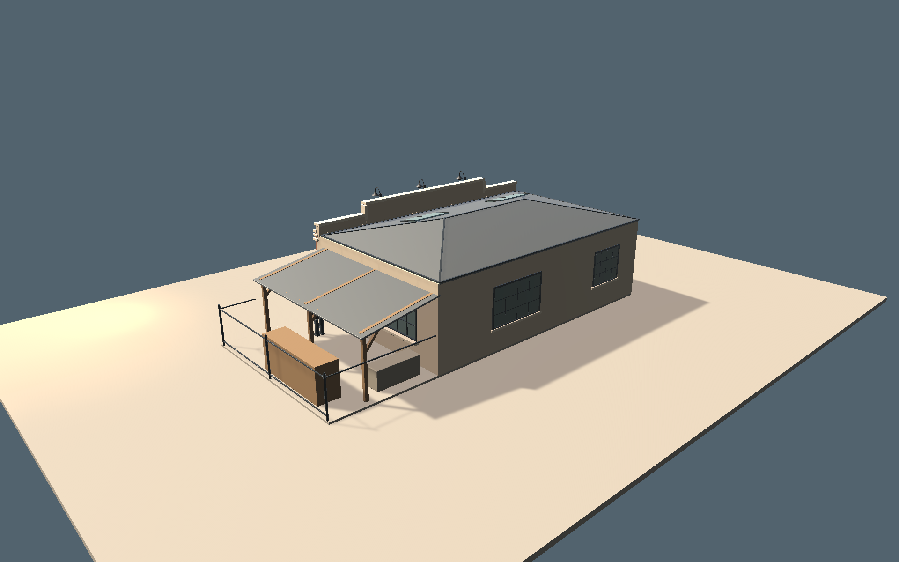
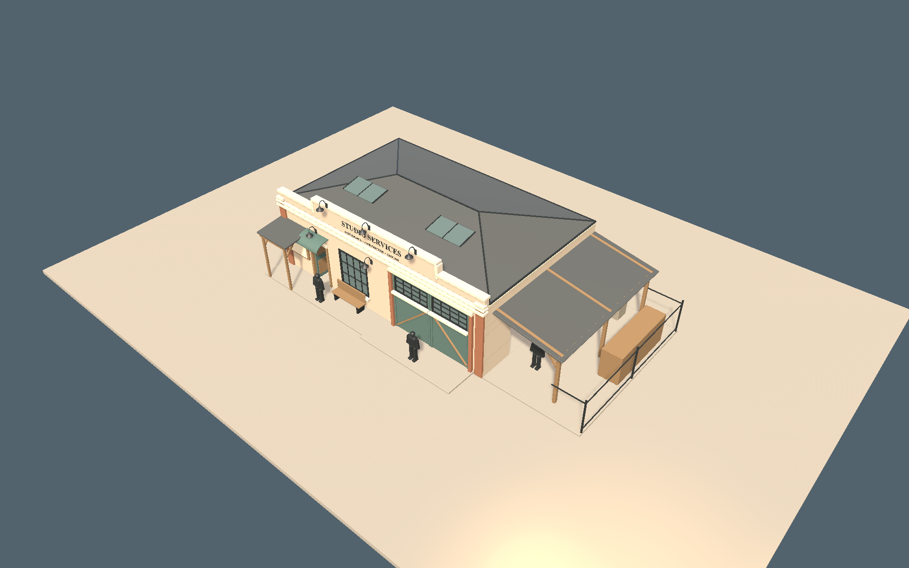

SilverScreen · architectural review 01
Studio Services
A modest employment office, workshop and working yard. This is the massing and layout gate: the surface treatment, reusable furniture, hardware and live gameplay integration are not finished.
14 × 9 m building4.22 m eave5.35 m parapet5.4 × 9 m yard19 local anchors
Approved direction → Unity massing
Approved concept — architecture and composition are the target. Background studio, vehicles and incidental dressing are not literal requirements.

Unity URP · three-quarter. Clean study materials, real openings and separate cutaway groups. Human forms are 1.75 m scale studies, not character assets.

Front — employment shelter, office entrance/window, workshop doors.
Rear / yard — attached shelter and clear workshop access.Management view and interior reveal

Exterior — ordinary gameplay presentation; interior markers are not baked into the model.
The proof hides the roof and camera-facing exterior walls, keeps far walls and interior partitions, and restores the original renderer states. Collision remains enabled throughout. This developer proof is not yet connected to held-person input.
Spatial plan
● Teal: authored interaction positions● Ochre: applicant waitingDashed blue: clear circulation intentBlocks: furnishing envelopes
Review boundary
Approve silhouette, proportions, openings, room layout and yard relationship here.
Do not treat this as approval of final materials, weathering, door hardware or props. Detailed canonical kit assets follow this gate.
| Present in this review | Still to build after approval |
|---|
| Reproducible Blender source and native mesh packet | Final surface breakup, brick, roof/drainage and hardware |
| Separate floor, roof, walls, partitions, doors, props and yard | Production canonical furniture/yard/architectural kit |
| 19 authored semantic positions and clearance preflight | Live applicant-area and hiring-spot configuration |
| Generic renderer-only cutaway and restoration proof | Held-person reveal/picking integration and actual gameplay validation |
| Shared canonical lamp prefab references | Final management/medium/close visual approval |
Evidence: Unity validation checks · Source manifest